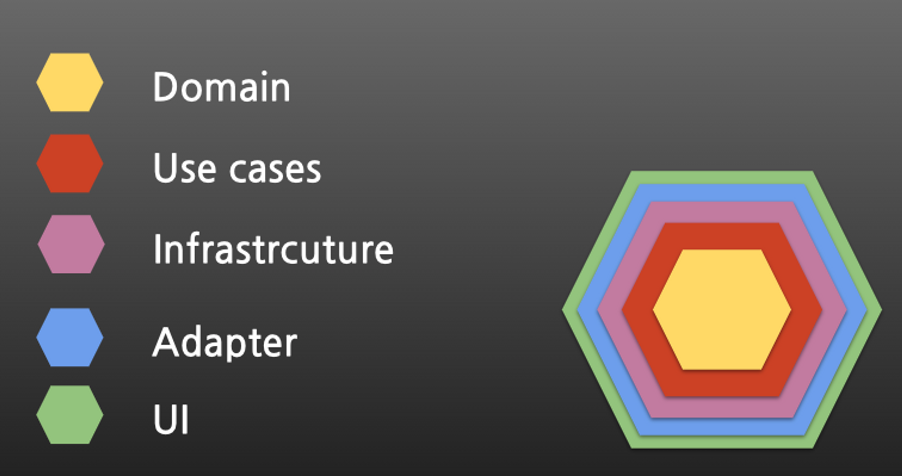

Vue & Typescript
Vue는 제가 처음으로 SPA 개발을 시작한 프레임워크입니다.
실무에서는 삼성 출신 개발자에게 체계적으로 배우며 클래스 기반 컴포넌트를 중심으로 Vue를 접하게 되었습니다.
기존 바닐라 JavaScript의 명령형 방식에서 벗어나 선언형 프로그래밍 패러다임을 자연스럽게 익힐 수 있었으며,
React의 가상 DOM을 활용한 성능 최적화와 Angular보다 가벼운 구조 덕분에 Vue를 가장 선호하는 프레임워크로 사용하고 있습니다.
현재 재직 중인 회사에서는 Vue 3 기반의 시스템을 구축 및 최적화하고 있으며,
DDD(도메인 주도 개발) 아키텍처를 적용하여 유지보수성과 확장성을 고려한 구조를 설계하고 있습니다.
특히, 혈액 감별 기기 소프트웨어의 리뉴얼 및 AI 연동 시스템 구축 프로젝트에서
Vue 3, TypeScript, NestJS, MySQL, Docker 등의 기술 스택을 활용하여 성능 개선 및 유지보수를 담당하고 있으며,
AI 코어와의 실시간 데이터 통신(TCP/WebSocket) 및 영상·이미지 처리 기능을 개발하여 시스템 최적화에 기여하고 있습니다.
Vue 3에서는 Composition API와 setup 함수를 적극 활용하여 코드의 가독성과 재사용성을 극대화하고 있으며,
Options API보다 더 유연한 설계가 가능하도록 구조를 개선하고 있습니다.

React & Typescript
스타트업에서 SPA(Single Page Application) 개발을 진행하며 React의 아키텍처를 깊이 있게 탐구하게 되었습니다.
Vue.js 경험을 바탕으로 React의 렌더링 흐름과 상태 관리 방식에 대한 이해를 확장하였으며,
컴포넌트의 생명주기 관리는 useEffect를 활용하여 의존성 주입을 기반으로 최적화하였습니다.
상태 관리는 Redux와 Zustand를 병행하여 사용하며, 전역 상태 관리의 복잡도를 줄이고 가독성을 높이는 데 집중했습니다.
또한, React Query(useQuery)를 도입하여 서버 상태를 효율적으로 캐싱 및 동기화하며,
불필요한 네트워크 요청을 줄이고 API 요청 최적화를 진행했습니다.
React의 성능 최적화를 위해 useMemo, useCallback, lazy loading, Suspense 등을 적극 활용하며,
불필요한 렌더링을 방지하고 렌더링 성능을 개선하는 패턴을 적용하였습니다.
실무에서 경험한 리팩토링 작업을 정리하여 토이 프로젝트로 구현하며, 보다 최적화된 React 구조를 탐구하고 있습니다.
Svelte
Svelte는 웹 애플리케이션을 개발하기 위한 새로운 종류의 프론트엔드 프레임워크 또는 라이브러리입니다.
Svelte는 다른 프레임워크와는 다르게 런타임에 프레임워크 코드가 아니라 컴파일 시간에 코드를 생성합니다.
이러한 특징으로 인해 런타임에서 필요한 프레임워크 코드가 없어 더 가벼우며, 최종적으로는 빠른 성능을 제공합니다.
위에 특성을 사용하여 로그인 , 회원가입 페이지를 구성하였습니다.
처음 시작한것 만큼 모자른점이 많았던 작업이었습니다.

TDD
TDD는 제가 따르는 핵심 원리 중 하나입니다. 테스트 주도 개발은 코드를 작성하기 전에 테스트 케이스를 먼저 작성하고, 그 후에 코드를 작성하는 방식으로 진행됩니다. 이를 통해 코드의 안정성을 높이고 유지보수성을 강화할 뿐만 아니라,
개발 초기에 발생할 수 있는 버그를 사전에 방지할 수 있습니다. 저는 TDD를 통해 소프트웨어 개발 주기를 단축시키고 품질을 향상시키는 경험을 쌓아왔습니다.

DDD (Domain-Driven Design)
DDD(도메인 주도 개발)는 복잡한 비즈니스 로직을 효과적으로 관리하고 유지보수성을 극대화하는 핵심 설계 원칙 중 하나입니다.
프론트엔드 개발에서도 DDD를 적용하여 도메인 계층을 명확히 분리하고, UI와 비즈니스 로직의 결합도를 낮추는 아키텍처 설계에 집중합니다.
컴포넌트 설계 시 도메인별로 명확한 경계를 설정하고, 상태 관리는 상태 주도 접근(State-Driven Development)과 반응형 데이터 흐름을 기반으로 구성합니다.
특히, 클린 아키텍처 원칙과 컴포넌트 계층 분리 전략을 활용하여 유지보수성과 확장성을 고려한 구조를 설계하고 있으며,
API 통신 및 데이터 모델링에서도 애플리케이션 도메인과 UI 레이어 간의 명확한 분리를 지향합니다.
이러한 접근 방식을 통해 도메인 로직이 프레젠테이션 레이어에 의존하지 않도록 설계하고,
스토어(Zustand, Redux) 및 React Query를 활용하여 도메인별 상태 관리와 비동기 데이터 흐름을 최적화하는 방식으로 적용하고 있습니다.
DDD를 기반으로 한 프론트엔드 설계를 통해 확장성과 유지보수성을 고려한 구조적인 개발 경험을 지속적으로 쌓아가고 있습니다.

ETC
- ESLINT
프로젝트 코드의 일관성있는 코드 작성을 위해서 사용했습니다. 잘못된 코드 혹은 컨벤션에 맞지 않는 코드를 작성하게 된다면 오류를 뱉어내기 때문에 사용했습니다.
대부분의 경우 airbnb 컨벤션을 사용합니다. 가장 유명한 코딩 컨벤션중에 하나 이기도 하고, 세부적인 것 까지 섬세하게 작성되어 있습니다.
- Prettier
프로젝트 코드의 코드 포맷팅을 위해서 사용했습니다. 따옴표를 사용할 것인지 쌍따옴표를 사용할 것인지, 한 줄에 최대 몇 줄까지 적을 수 있는지,
세미콜론을 붙일 것인지 안 붙일 것인지와 같은 코드의 일관성을 지킬 수 있습니다.